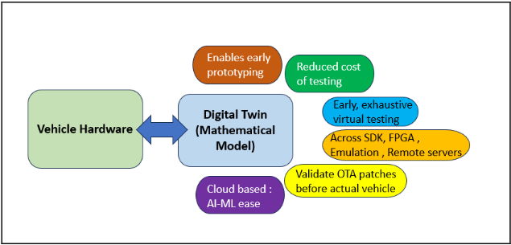
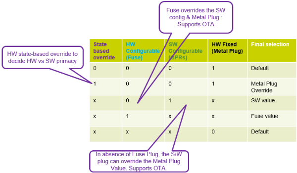
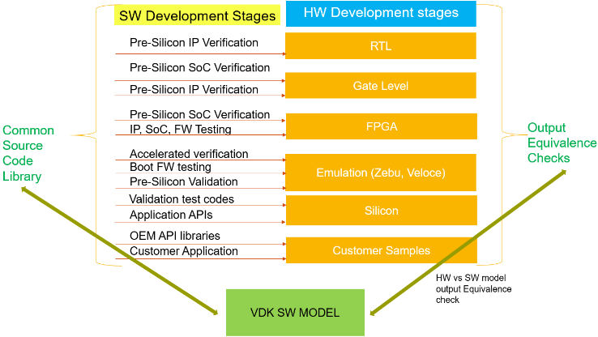
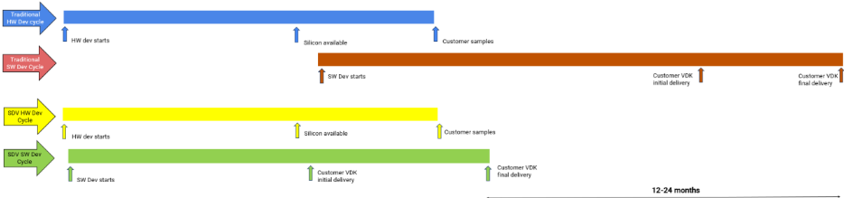
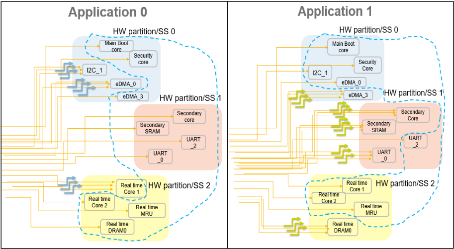

SDV Aware Verification: Verification Challenges, Opportunities and Evolution around Software Defined Vehicles and Zonal Architectures
SDV Aware 验证：围绕软件定义汽车（SDV）与 Zonal 架构的验证挑战、机遇与演进
简介
论文针对软件定义汽车（SDV）与 Zonal 架构带来的验证范式变化：HW-SW 协同设计、OTA 升级与 cohort 间 freedom-from-interference 使传统以 HW 为中心的验证不再充分。作者提出 SDV aware 验证方法：对齐并检查 HW/SW 各开发阶段的等价性、验证 SW 对 HW 的可控可观测性、通过 HW 资源唯一索引与动态 cohort 映射实现细粒度隔离验证，并结合 formal、structural 与 dynamic 手段完成 sign-off。故障恢复采用 SW safety API 优先、逐级升级到 module/cohort/system reset 的分级策略，用故障注入组合验证约 256 个故障源在 4 种反应下的安全恢复。在含 20 CPU、25 个 unique memory、445 外设、315 个 SW resettable domain 的最新 SDV SoC 上完成验证，客户使能提前 12-24 个月，pre-silicon SW 配置 sign-off 还将部分 characterization 硅测试时间从数天缩短到数分钟。
问题
传统以 HW 为中心的验证方法无法满足 SDV/Zonal 架构需求：SW 需与 HW 并行开发且各阶段保持等价与同步；SW 需对绝大多数 HW 特性具备控制与可观测性以支持 OTA；并行运行的 zone/virtual cohort 之间必须 freedom-from-interference；故障默认由 SW 诊断恢复、必要时逐级升级复位的 HW-SW 混合处理带来大量新验证组合。论文要解决的是如何规划、执行并 sign-off 这些新验证范围，并高效覆盖庞大的 HW-SW 互操作验证空间。
方法
核心方法包括：(1) 对系统内所有 HW 资源（core、外设、DMA 通道、memory 等）赋予唯一索引并动态映射到 SW cohort/VM，使每个细粒度资源可单独隔离、独立控制时钟/复位，支撑 FFI 验证；(2) 寄存器描述与基础协议验证提前优先完成，并在 RTL IP/SoC、FPGA、Emulation、Pre/Post-Silicon、VDK 等平台间复用寄存器与功能 API 并建立等价性检查，virtual prototype 提前约 2 年交付 OEM；(3) 分级故障恢复模型（SW safety API → module reset → cohort reset → system reset），配合针对单模块、模块内多个、cohort 内多个、跨 cohort 故障的故障注入组合验证；(4) HW-SW 混合时钟 trim 验证，含随机复位下的 trim 保持性、瞬态频率、settling 行为与优先级负向检查；(5) 基于 formal 工具的结构化检查验证隔离的完整性与正确性；(6) 从 machine readable requirements 自动生成模块化 API 并复用 safety sequence checks。
关键结果
约 500 个元素（cores、memories、peripherals）跨 315 个 SW resettable domains，用 formal、structural 与 dynamic 技术组合完成验证
目标 sign-off 的 SDV SoC 包含 20 CPUs、25 unique memories、445 peripherals
接近 256 个 fault sources 在全部 4 种可能反应下完成 safety recovery 验证
SDV 客户使能提前 12-24 个月
最新 SDV 汽车 chip 的 virtual prototype 比生产样片提前约 2 年交付给领先 OEM 及其 Tier1 供应链
pre-silicon SW 配置 sign-off 使部分 characterization 测试的硅上测试时间从数天缩短到几分钟
创新点
区别于传统 HW-centric 验证，论文将 SW 可配置性、OTA 能力、FFI 隔离与分级故障恢复纳入 pre-silicon 验证 sign-off 范围，提出 HW-SW interlocking 的 SDV aware sign-off 方法论；以 HW 资源唯一索引到动态 SW cohort 的映射支撑隔离与恢复验证；并从 machine readable requirements 自动生成验证 API 与 checks。论文还基于自身部署经验（含部分失败案例）给出改进方向，如用真实客户 SDV API 替代代表性 bus traffic 进行故障注入与隔离检查。
团队参考意义
相关度级别：high
命中能力域：2.5 功能安全与安全机制 | 2.6 Fault simulation/Z01X/TFMEA | 2.7 CyberSec/自动化
理由：论文直接命中 2.5 的“安全机制设计与验证/safety verification”（FFI 隔离验证、分级故障恢复、safety sequence checks）与 2.6 的“基于功能 stimulus 的 fault injection、fault grading”（故障注入组合与 256 个故障源的 fault coverage 量化）；其从 machine readable requirements 自动生成模块化 API/checks 的做法与 2.7 的自动化子项方法论相通，但论文不含 CyberSec/threat modeling 内容。对团队而言，虽然服务对象是存储与高速互连 IP 而非汽车 SoC，但 IP 级 FuSa 开发中的安全机制验证、故障注入与 fault grading 论证、formal 隔离检查方法可直接借鉴，故判为 high。
建议动作：深入精读并做内部分享
中文全文
SDV Aware Verification : Verification Challenges, Opportunities and Evolution around Software Defined Vehicles and Zonal Architectures
Neha Srivastava NXP Semiconductors 印度私人有限公司 neha.srivastava@nxp.com
摘要——软件定义汽车（Software-Defined Vehicle，SDV）凭借其固有的基于域（domain）或区域（zone）的汽车架构 [1][2]，具有若干基本准则，这些准则正在推动行业趋势与需求的演进。其中最主要的是软硬件（Hardware-Software，HW-SW）协同设计、由软件（SW）提供的在道路上的空中下载（Over-The-Air，OTA）补丁能力，以及软件各群组之间的免受干扰（freedom-from-interference）。与之相伴的，还有关于验证应如何规划、执行和签核（sign off）的革命性转变。本文描述了验证环境及相关方法学所发生的根本性、深层次变化。其中值得注意的是：确保HW开发阶段与SW开发阶段保持对齐的验证检查；确保SW原型模型与HW的等效性；针对SW对HW可控性的功能覆盖率与签核；以及通过对每个HW元素的细粒度控制及元素之间的隔离来确保免受干扰。借助SDV感知验证签核所带来的信心，实现了显著的效率提升，并使SDV客户提前约12-24个月获得支持。共约500个元素（涵盖内核、存储器和外设），分布于315个SW可复位域中，通过形式化、结构化和动态技术的组合完成了验证。作为额外收益，流片前SW可配置性签核所带来的信心还为某些特征化测试节省了芯片测试时间，从数天缩短至数分钟。
I. INTRODUCTION
软件（SW）对客户如何配置和使用我们的汽车解决方案 [3] 有着重要得多的影响，包括通过空中下载（OTA）更新，使车辆即使在使用多年之后仍能扩展其用途。硬件（HW）特性与软件可配置性之间的角色交织日益加深，而在道路上行驶的车辆上发现的任何限制已不再区分硬件与软件。因此，对于软件定义汽车（SDV）的开发而言，至关重要的是确保软件交付尽早且高质量，并在每个开发阶段建立硬件与软件之间的等价性与同步性。传统的以硬件为中心的验证方法已不足以满足SDV架构的需要。因此，需要在规划和执行验证的硬件与软件视角之间纳入完美的互锁，以实现SDV感知签核。这些验证方法已部署于我们上一款SDV产品 [5] 中，并帮助拦截了与SDV相关的新范围和挑战。通过从其中少数部署失败中汲取的经验教训，未来也存在改进的机会。
II. SDV TENETS AND INDUSTRY EVOLUTION TRENDS
随着芯片需求的不断增长以及加快解决方案产品化进程的意图，业界已无法再承受在硬件（HW）开发周期完成后因软件（SW）使能而导致的延误。软件开发与测试需要与硬件开发和验证并行推进。这也使得在硬件开发的早期周期中即可向架构与设计（IP、SoC、MCU）团队提供早期反馈，以纠正需求预期与设计实现之间的任何脱节 [6]。
如图 1 所示，通过这种方法，芯片制造商和客户均可获得多重优势。

B. SW Patch , OTA provision : Flexible , Configurable HW
软件定义汽车（SDV）的一个重要方面是能够在硬件（HW）保持不变的情况下，通过空中下载（Over-the-Air, OTA）方式实现软件（SW）更新 [4]。只有当我们不再受限于硬件老化，而是能够纯粹通过软件更新来添加或增强功能——即使是在车辆上路运行多年之后——车辆寿命才能真正得到延长。
许多此类对客户的产品承诺都可以在数字孪生（digital twin）上加以验证，以确保硬件具备足够的可配置性来接受 OTA 软件更新。此外，软件应当对大多数硬件特性具有控制和可观测性。如图 2 所示，SoC 的所有关键且可扩展的特性都可以被开发为：除硬件固定（例如硬编码特性，或只能在流片（tape-out）时更改的金属插塞）或硬件可配置（例如可编程熔丝）机制之外，始终具备软件可配置性。这确保了通过软件通用控制以及应用/固件（FW）控制，器件的功能可以得到增强。


C. Freedom from Interference : Isolations between cohorts and applications
The different zones or virtual cohorts which are operating in parallel in a SDV need to be completely free from any interference from the functionality or failures of other cohorts/zones. Such isolation controls should be mappable by SW to dynamically varying cohort definition within an application.
This requires a list of all HW resources in the system which can be assumed to the lowest granularity building blocks for the varying, SW-defined virtual cohorts in different SW applications. An example is each Linflex module instance can be allocated to different cohorts and even the allotment can vary across applications. Hence these need to be individually isolatable and its resets and clocks controlled individually such that if any fault or error occurs in these individual HW components, they can be quiesced, isolated, its clock stopped and as a final local recovery, its reset asserted with no impact to rest blocks of that cohort and as an extension, no impact on any applications running across different cohorts in the system. As an example, in 'Fig. 3', the left part of table shows the HW view where, as an example, we have individual HW resources, like different cores, different input/output peripherals, multiple DMA engines and DMA channels as well as multiple system accessible memories. Each one is identified with a unique index so as to be able to allocate it individually to cohorts / virtual machines (VMs). The right-hand side of the table shows the SW application / cohort view.
So, in one application (0), cohort 3, highlighted in light blue, is composed of one real time core, DRAM0 , I2C_1 instance , and EDMA0 . The cohort could simply be involved in fetching data through I2C input path, transferring the data from I2C embedded FIFOs to DRAM , processing it by real time core and communicating out the processed data through I2C peripheral. In another configuration, highlighted in green , secondary M7 core , UART_0, eDMA_3 and a secondary SRAM are grouped as resources needed to perform SW tasks of cohort 1 of application 1
.
| HW view (Fixed mapping in RTL ). | HW view (Fixed mapping in RTL ).Lowest Granularity HW resource | HW view (Fixed mapping in RTL ).HW unique index | Cohort / VM_Mapping (Application 0) | Virtualization view (SW configurable, dynamic ) Cohort / VM_Mapping (Application 1) |
|---|---|---|---|---|
| Core | Main boot core | 0 | 0 | 0 |
| Core | Security core | 1 | 1 | 0 |
| Core | Secondary core | 2 | 2 | 1 |
| Core | Real time0 Core 1 | 3 | 3 | 2 |
| Core | Real time0 Core 2 | 4 | 4 | 3 |
| Core | ||||
| Core | Real time3 Core 2 | 7 | 7 | 6 |
| Peripherals | I2C_0 | 18 | 0 | 3 |
| Peripherals | I2C_1 | HW to 19 SW | 3 | 2 |
| Peripherals | UART_0 | 25 mapping | 7 | 1 |
| Peripherals | UART_2 | 26 | 2 | 6 |
| Peripherals | DSPI_1 | ε3 | 4 | 2 |
| Peripherals | DSPI_3 | 35 | 6 | ε |
| Peripherals | eDMA_0 | 47 | 3 | 6 |
| Peripherals | eDMA_3 | 49 | 2 | 1 |
| Peripherals | MRU3 | 64 | 4 | 6 |
| Peripherals | ||||
| Mem | Secondary-SRAM | 112 | 7 | 1 |
| Mem | Real Time DRAM0 | 114 | 3 | 2 |
| Mem |
| HW view (Fixed mapping in RTL ). | HW view (Fixed mapping in RTL ).Lowest Granularity HW resource | HW view (Fixed mapping in RTL ).HW unique index | Cohort / VM_Mapping (Application 0) | Virtualization view (SW configurable, dynamic ) Cohort / VM_Mapping (Application 1) |
A. Verification enhancements to enable high quality VDK /Digital Twin for customer
A simple example of verification enhancement done around this was to ensure that all register description and basic protocol (e.g., CAN Tx, Rx) verification was prioritized to complete much earlier. This involves exercising the various register fields of a HW module for write, read back as well as negative checks around reserved or invalid spaces of registers or different types of accessibility (write-only, read-only etc).
Extension of this is ensuring reuse and establishing equivalence of the developed module register and functionality APIs across platforms - RTL IP Verification, RTL SOC Verification, FPGA, Emulation /Accelerated Verification, Pre-Silicon Validation, Post-Silicon Validation, Applications and SW teams, OEM SW development teams, and customer VDK (Virtual Development Kit). 'Fig. 4' describes this comprehensive approach. The virtual prototype for our latest SDV Automotive chip has been delivered to a leading OEM and its Tier1's supply chain about 2 years before the production sample delivery dates to customer, as shown in 'Fig. 5'. This enabled the OEM to shift-left their software development and accelerate the development of SDV capabilities. There are working demonstrations available for the efficiency of these VDKs. High confidence is available from SW development cycles over test vehicles samples of the Automotive SOC OEMs and customers.


B. HW-SW mixed control use-cases
An example of verification enhancement is handling of fault recovery in a graded approach with SW handling being the default for most of the faults in system. In SDV approach, with dynamic virtualization, intent is to diagnose and resolve faults by SW as the default handling. This is delegated to SW safety APIs as we want to maximize the availability and applications running on rest of the HW resources. Only in case a localized, SW only fault recovery is not sufficient, do we move to next grade which could be a module reset. In case even that doesn't suffice, and fault may have propagated to beyond a module boundary, we can escalate to a cohort reset based recovery and finally a system reset. The SW control and diagnostics decrease with each of these grade escalations and the system availability too decreases. This is shown as a simplified representation in 'Fig. 6'. Verification enhancement accounts for all such HW-SW recovery possibilities with fault injection combinations targeting faults on single module, multiple in module, multiple in cohort , multiple across cohorts etc.
SW- HW handling of fault recovery
| Example | |||
|---|---|---|---|
| Single bit ECC (restricted to a module) | Grade 0 | Interrupt handler SW based fault /error clearing | SW |
| Multi bit ECC (restricted to aaou e | Grade 1 | SW triggered HW reset (SRD) | SW + HW |
| Multi bit ECC (across modules of a cohort) | Grade 2 | Escalation to cohort reset | SW + HW |
| Multi bit ECC (in system shared resource like DMA) | Grade 3 | System reset | HW |
| Example | | | |
作为对故障覆盖率的量化，在最新的 SDV SoC 上验证了近 256 个故障源，其安全恢复涵盖了全部 4 种可能的反应。基于机器可读的需求
C. Verification around Freedom from Interference
As shown in 'Fig. 7', the components inside the dotted line boundary represent elements outside the cohort definition and hence should have freedom-from-interference from the elements outside the boundary (i.e., the cohort elements). Hence there needs to be isolation between the within-cohort and outside-cohort elements, even if they are part of same HW physical partition. Secondly there needs to be isolation capability even within elements of same cohort in case fault occurs in one granular HW resource of a cohort as we want to restrict the propagation of fault in one HW resource of the cohort to other resources of the same cohort too to ensure high availability.



Lastly, we should be able to control configuration bits and read back the status for all components of a cohort in a grouped way (even if these components are spread across separate physical partition of the chip). This aids SW efficiency and API latency reduction. The arrows can be envisioned as the isolation, clock , reset controls .
Verification enhancement involves the following :
为了量化验证签核（sign-off）的范围，作为签核目标的软件定义汽车（SDV）SoC 由 20 个 CPU、25 个不同的存储器和 445 个外设组成。与 SDV 对齐的验证策略与方法的调优，以及对模块化、自动化 API 和检查项的复用，帮助更快、更高效、更高质量地攻克了这一看似庞大且充满挑战的范围。
此外，还有一些结构性（基于形式化工具）的检查，用于验证以下内容：
设计开发早期形式验证运行（formal run）的示例数据（通过早期修复实现稳健设计）：
该流程示例输出的汇总如“图 8”所示。
| Reset Domain | Isolation present (Y/N) | Safe Stating Check |
|---|---|---|
| [POR RESET[main] | N | N |
| POR RESET[aon] | N | N |
| DEST RESET[main] | N | N |
| DEST RESET[aon] | N | N |
| FUNC RESET[main] | N | N |
| [FUNC RESET[aon] | N | N |
| SRD SSI | Y | Pass |
| SRD DEBUG | N | N |
| SRD REST | N | N |
| SRD DMA | Y | Pass |
| SRD AUXMODULE | Y | Pass |
| SRD QSPI | Y | Fail |
| SRD uSDHC | Y | Pass |
| SRD_RTC | No Module | N |
| SRD_SDB | No Module | N |
| SRD_MAIN | No Module | N |
| SRD DSPI0 | Y | Pass |
| SRD DSPI_1 | Y | Pass |
| SRD_LIN_0 | Y | Pass |
| SRD_LIN_1 | Y | Fail |
| SRD LIN_2 | Y | Pass |
| SRD FLEXCAN_0 | Y | Pass |
| SRD FLEXCAN 1 | Y | Pass |
| SRD_FLEXCAN_2 | Y | Pass |
| SRD_UART_0 | Y | Pass |
| SRD_UART_1 | Y | Pass |
| Reset Domain | Isolation present (Y/N) | Safe Stating Check |
图 8. 用于检查隔离完整性与正确性的流程的形式验证输出

IV. RESULTS
SDV 感知验证所取得的主要成果如下：
V. CONCLUSIONS
本文介绍了软件定义汽车（SDV）的基本原则，以及围绕 SDV 的区域架构（zonal architecture）所带来的下一代汽车行业需求。文中讨论了新的验证挑战，这些挑战已被转化为机遇，并落实于我们最新的产品解决方案中。与软硬件（HW-SW）互操作性相关的复杂而庞大的范围，已通过模块化、可复用的 API、验证任务，以及动态、结构和形式化方法相结合的方式得到量化并加以攻克，从而有助于实现穷尽式的签核（sign-off）。
这些理念付诸实践所获得的优势令人鼓舞，帮助我们最大化了软硬件互操作性的潜力。通过对软件（SW）在硬件（HW）上的可配置性进行早期采样，向客户交付的信心得到大幅提升，OEM/客户能够获得可靠的 VDK 以及硅片样品。SDV 感知验证的未来工作将探索在故障注入或隔离检查期间，用围绕客户实际用例场景的真实客户 SDV API 来替代代表性总线流量或用例画像建模。这将在与 OEM 和客户的协作中完成，以使签核更加真实和稳健。此外，还计划针对芯片功能的软硬件组合开展进一步的压力测试，包括两者之间可能存在的任何冲突或优先权裁决。还将通过在系统跨多个群组（cohort）执行多个应用的同时遍历异步复位、错误、故障或中断事件，来模拟实际车辆行为，从而进一步提升软硬件互操作性的信心。
证据核查
2 条证据未在原文中核对到